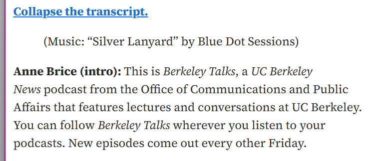

A well-formatted, accessible transcript is only as useful as the content it’s relaying. The best transcripts are built on a strong foundation of content already designed with universal design principles in mind.
Breaking a transcript down into manageable chunks, preferably into subtopics, can be a great practice to increase readability in a generally understandable and accessible manner. It's best to not include too much text in one single section so you can read it with ease. The same can be said for subtitles/closed captions - do not include too much text on the screen so as to overload the reader.
It is also good to avoid the “curse of knowledge,” where “we assume that the people we are talking to have the same level of understanding as we do on a given subject . Not everyone might know what a transcript is talking about, so it is important to organize the information in a way that is informative to all users. (“Curse of Knowledge”)
Integrated description is another part of universal design [link to “universal design”]. It is a design choice that consists of describing important visual content in the main audio (W3).
This is also where integrated description comes in. For example, rather than saying “Select the ‘Home’ tab here,” say “Select the ‘Home’ tab on the left-hand side of the screen,” as that integrates the screen into the audio (“Audio Content and Video Content”)
Timestamps can also be useful here, enabling a user to go to a certain time to see if they missed something important and record it.
Example of good transcription:
